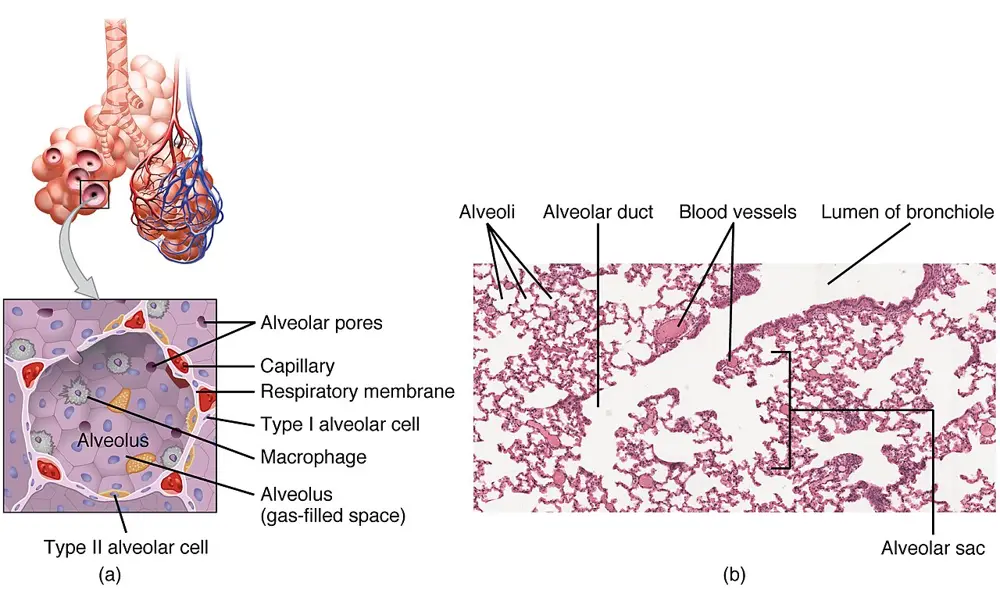
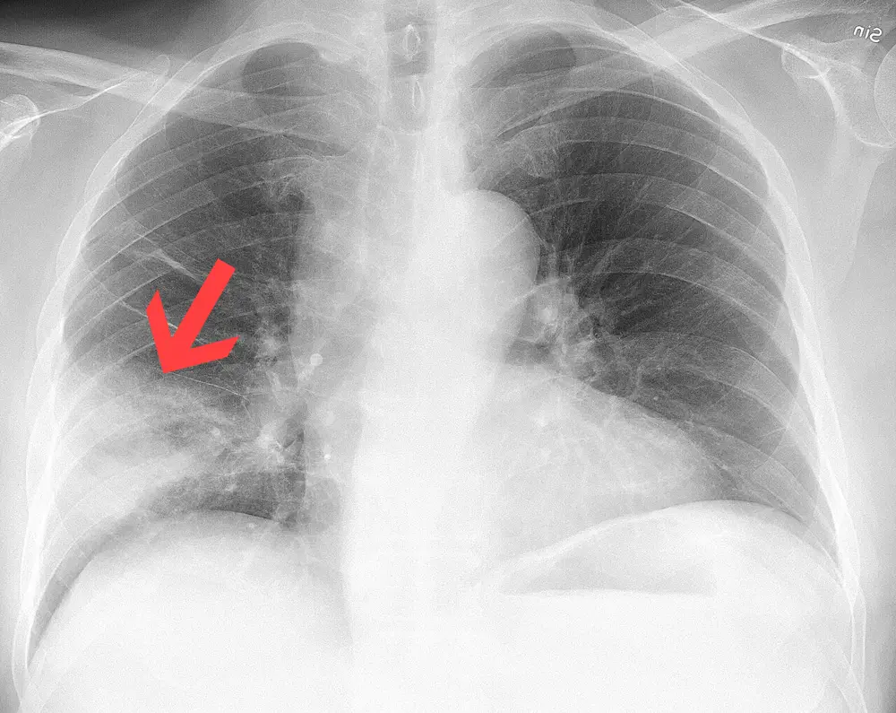

La pneumonie acquise en communauté, notée PAC (extra-hospitalière), désigne une infection aiguë des voies respiratoires inférieures qui se développe hors du contexte hospitalier, chez un patient non hospitalisé dans le mois précédentn10. Cette définition de l'ambulatoire genevois porte sur l'adulte immunocompétent, sans hospitalisation ni antibiotique dans les 3 mois précédentsn10. Dans la présentation d'une dyspnée aiguë, elle compte parmi les causes graves à ne pas manquer, car elle peut conduire rapidement au décèsn10.
2. Épidémiologie (Suisse, puis Europe)
En ambulatoire, l'incidence annuelle de la pneumonie communautaire varie de 1,07 à 1,2 cas pour 1000 habitants, et elle atteint jusqu'à 14 cas pour 1000 habitants chez les plus de 65 ansn10. La pneumonie reste aujourd'hui la première cause mondiale de décès liée à une infection, ce qui justifie sa place de diagnostic grave dans toute dyspnée aiguën10. Les données suisses ont longtemps été limitées, si bien que les chiffres cliniques utiles proviennent d'abord de cohortes hospitalières et d'études européennesn22.
2.a Europe : incidence et poids dans la dyspnée
Une revue de la littérature européenne rapporte une incidence globale de 68 à 7000 cas pour cent mille habitants, avec une très large dispersion entre les paysn15. Pour les cas hospitalisés, toutes causes confondues, l'incidence s'étend de 16 à 3581 cas pour cent mille habitants, et elle augmente de façon constante avec l'âgen15. Cette dispersion tient surtout à l'hétérogénéité de la surveillance, ce qui interdit de comparer les pays sans précautionn15.
Dans la cohorte EURODEM, qui a inclus 5569 patients dyspnéiques aux urgences en Europe et en Asie-Pacifique, les infections respiratoires basses forment le premier diagnostic, avec 24,9 %n25. Elles précèdent l'insuffisance cardiaque avec 17,3 %, l'exacerbation de bronchopneumopathie chronique obstructive avec 15,8 % et l'asthme avec 10,5 %n25. Ce chiffre de 24,9 % couvre toutes les infections respiratoires basses, bronchites aiguës comprises, et ne représente donc pas la seule pneumonien25.
2.b Suisse : la cohorte CAPNETZ
La cohorte suisse CAPNETZ a recruté prospectivement, entre 2010 et 2022, des adultes atteints de pneumonie dans deux hôpitaux tertiairesn22. En effet, parmi 478 patients, 97,7 % ont été hospitalisés pour une durée médiane de 7 jours, et 76,4 % présentaient au moins une comorbiditén22. Cependant, les soins intensifs ont été nécessaires dans 7,3 % des casn22.
La mortalité globale s'élève à 2,9 % à 28 jours et à 5,5 % à 180 jours dans cette cohorten22. Pendant la pandémie de COVID-19, elle monte à 5,7 % à 28 jours et à 10,9 % à 180 joursn22. Elle est plus élevée chez les patients âgés, immunosupprimés ou atteints d'un cancer, ce qui oriente la vigilance vers ces groupesn22. Dans EURODEM, la mortalité hospitalière des patients dyspnéiques dont le diagnostic est une infection respiratoire basse atteint 8,7 %n25.
Le tableau suivant montre les principaux chiffres de ce point à retenir pour l'examenn22.
Chiffre
Population
Année ou période
Source
1,07 à 1,2 cas pour 1000 habitants
Incidence annuelle ambulatoire
2024
HUG (Hôpitaux universitaires de Genève), stratégie PAC
14 cas pour 1000 habitants
Plus de 65 ans
2024
HUG, stratégie PAC
24,9 %
Infections respiratoires basses parmi 5569 dyspnéiques aux urgences
2019
EURODEM
2,9 % et 5,5 %
Mortalité à 28 et 180 jours, 478 patients suisses
2010 à 2022
CAPNETZ Suisse
38,3 %
Pathogène identifié
2010 à 2022
CAPNETZ Suisse
35,0 %
Pneumocoque parmi les pathogènes identifiés
2010 à 2022
CAPNETZ Suisse
4,5 %
Couverture vaccinale antipneumococcique, 18 à 85 ans
2020
Zens et coll.
2.c Germes, saisons et résistances
Dans CAPNETZ, un pathogène est identifié dans 38,3 % des cas, et les tests moléculaires sur expectoration et lavage bronchoalvéolaire améliorent ce rendementn22. En outre, les infections bactériennes isolées dominent avec 20,2 %, devant les infections mixtes avec 9,5 % et les infections virales avec 7,4 %n22. Ainsi, le pneumocoque, ou Streptococcus pneumoniae, est le germe le plus fréquent avec 35,0 %, suivi de Haemophilus influenzae avec 16,1 %n22. Chez les immunodéprimés, c'est Haemophilus influenzae qui prédominen22.
Une étude de Barcelone sur 4431 patients montre que la pneumonie survient toute l'année n7. Ainsi, 34 % des cas se produisent en hiver, et deux tiers des patients consultent donc hors de cette saisonn7. Le pneumocoque est plus fréquent en hiver, avec 21 % contre 13 % en automnen7. La grippe culmine en automne, avec 6 %, et se maintient en hiver, avec 5 % n7. En revanche, Legionella pneumophila est plus fréquente en automne et en été, avec 4 %, qu'en hiver, avec 1 %n7.
Sur le plan des résistances à Genève en 2023, entre 1 et 18 % des pneumocoques étaient résistants aux pénicillines et 7 % aux macrolidesn10. Ces taux restent une estimation approximative, car peu de souches ont été analysées, et les données actualisées figurent sur le site Anresis, centre suisse pour le contrôle de l'antibiorésistancen10.
2.d Groupes à risque et histoire naturelle
Les facteurs de risque de complication sont un âge supérieur à 65 ans, une mauvaise hygiène bucco-dentaire et une immunosuppression n10. S'y ajoutent des comorbidités comme la bronchopneumopathie chronique obstructive, le diabète, l'insuffisance cardiaque ou l'obésitén10. Le tabagisme actif est un autre facteur de risque, car le tabagisme, actif ou passif, est un facteur de risque indépendant de pneumonien10n10.
L'histoire naturelle se joue dans les premiers jours de traitementn10. Tout patient pris en charge en ambulatoire est revu dans les 48 heures afin de réévaluer la sévérité de la pneumonien10. Les complications, fréquentes, sont recherchées en l'absence d'amélioration ou en cas d'aggravation après deux jours de traitementn10. Les événements cardiovasculaires, infarctus du myocarde et arythmies surtout, sont beaucoup plus fréquents chez les patients atteints de pneumonien10. Chez le patient âgé, la pneumonie peut aussi constituer un événement préterminal, qui impose de discuter les objectifs de soinsn16.
2.e Enjeux de santé publique
La couverture vaccinale antipneumococcique reste faible en Suisse. En 2020, elle était de 4,5 % chez les adultes de 18 à 85 ans, et de 9,6 % chez les 65 à 85 ansn13. Chez les personnes présentant une maladie pulmonaire chronique ou un asthme, 14,8 % étaient vaccinées, contre 2,7 % de celles sans facteur de risque déclarén13n13. En effet, les principales raisons de non-vaccination sont un manque d'information et l'absence de recommandation par le médecinn13.
Le traitement antibiotique court de 5 jours, recommandé en ambulatoire, répond à un enjeu de résistance : une antibiothérapie plus longue est associée à une mortalité plus élevéen10. Les antibiotiques inutiles sont enfin évités lorsque l'imagerie exclut une pneumonie, ce qui préserve l'écologie bactériennen10.
3. Physiopathologie
La pneumonie naît d'un déséquilibre entre la charge microbienne qui atteint les alvéoles et la défense innée du poumon distaln20. Chaque jour, des bactéries pénètrent dans les voies aériennes terminales sans provoquer de maladie, car le macrophage alvéolaire les éliminen20. La maladie apparaît lorsque la charge microbienne devient trop grande ou trop virulente, ce qui déclenche une réaction inflammatoiren20.
Le montre l'alvéole où l'exsudat de la pneumonie gêne l'échange.
Zone respiratoire et alvéoles. OpenStax a dessiné la zone respiratoire en couleurs, et le schéma relie l'alvéole au capillaire.

Lecture guidée.
L'alvéole est l'espace aérien où se fait l'échange, entouré de capillaires.
Le capillaire reste contre la membrane respiratoire, très mince chez le sujet sain.
Le sac alvéolaire contient plusieurs alvéoles au bout du canal alvéolaire.
Les vaisseaux sanguins de la cloison sont visibles sur la coupe histologique.
Pièges.
Le schéma montre l'alvéole saine, donc il ne montre pas le comblement purulent d'une pneumonie.
La coupe histologique ne distingue pas un exsudat infectieux d'un œdème.
Ce que l'image décide. L'antibiotique vise le germe dans l'alvéole, alors que l'oxygène corrige le trouble d'échange tant que les alvéoles restent comblées.
Image : OpenStax College, CC BY 3.0, Wikimedia Commons, consultée le 2026-11-15. Annotations : œuvre dérivée sous la même licence.
3.a De la porte d'entrée à l'alvéole
Les germes arrivent par microaspiration de la flore oropharyngée, par inhalation d'aérosols ou, plus rarement, par voie sanguinen9. La colonisation bactérienne de la bouche joue un rôle central : la malnutrition, le tabagisme, une mauvaise hygiène bucco-dentaire et la bouche sèche favorisent la colonisation orale et donc l'aspiration pathogènen9. C'est pourquoi l'examen de la cavité buccale fait partie du suivi d'un patient ayant présenté une pneumonien10.
Les bactéries se répartissent en deux grands groupesn10. Les bactéries extracellulaires dominent en ambulatoire, avec en tête Streptococcus pneumoniae puis Haemophilus influenzaen10. Parmi les bacilles intracellulaires, Mycoplasma pneumoniae est le plus fréquent, suivi des espèces de Legionella et de Chlamydian10. Les virus sont impliqués dans environ 30 % des pneumonies, et les co-infections virales et bactériennes sont relativement fréquentesn10n10.
3.b Réaction inflammatoire et consolidation
Le macrophage alvéolaire est capable de reconnaître quelques structures très conservées, les motifs moléculaires associés aux pathogènes, grâce à des récepteurs de reconnaissance de motifsn20. Lorsque la menace dépasse sa capacité, il déclenche une inflammation qui recrute un grand nombre de neutrophiles dans les espaces alvéolairesn20. Les cytokines assurent la communication entre ces cellules, et la réponse varie un peu selon la souche bactérienne responsablen20. Cette cascade explique la fièvre, les frissons et l'élévation des marqueurs inflammatoires.
L'exsudat inflammatoire remplit ensuite les alvéoles, ce qui crée une consolidation visible à l'imagerien14. Cet espace aérien consolidé se gonfle difficilement, si bien que la perte de volume réduit la compliance pulmonaire totalen14n14. La compliance dynamique du poumon restant ventilé baisse aussi, peut-être par une réduction de l'activité du surfactant, ce qui augmente encore le travail respiratoiren14. Ce travail accru est la base physiologique de la dyspnée et de la polypnée.
3.c Hypoxémie : shunt et inadéquation ventilation-perfusion
L'hypoxémie précoce de la pneumonie provient principalement de la persistance du flux sanguin artériel pulmonaire vers le poumon consolidé, ce qui crée un shunt intrapulmonairen14. Plus tard, l'inadéquation entre ventilation et perfusion devient le mécanisme dominantn14. Cette persistance du flux traduit un échec relatif de la vasoconstriction pulmonaire hypoxique, causé au moins en partie par des prostaglandines vasodilatatrices associées à l'inflammationn14.
Chez 23 patients hospitalisés, ceux qui respiraient spontanément montraient un shunt faible, de 7 ± 2 % n8. En revanche, les patients ventilés mécaniquement avaient un shunt plus important, de 22 ± 5 %n8. Sous oxygène pur, le shunt restait inchangé, ce qui explique pourquoi l'hypoxémie d'un shunt répond mal à l'oxygène seuln8. L'insuffisance respiratoire est l'une des principales causes de décès dans la pneumonie pneumococcique aiguë, sous deux formes qui peuvent coexister : l'insuffisance ventilatoire et l'insuffisance hypoxémiquen14.
Au lit du patient, cette physiologie se lit par la saturation en oxygène, qui reste l'examen recommandé en ambulatoiren10. Ainsi, une hypoxémie constitue une indication à l'oxygénothérapie et au transfert à l'hôpital, indépendamment du résultat des scores de gravitén10.
3.d Réaction systémique et complications
L'inflammation locale peut déborder vers l'organisme entier, ce qui conduit à l'insuffisance respiratoire et au sepsisn10. Les complications pleurales comprennent l'épanchement pouvant mener à un empyème, ainsi que l'abcès et la pneumonie nécrosante, notamment en cas d'infection à Staphylococcus aureusn10. L'agent pathogène influence l'évolution. Legionella pneumophila a un réservoir hydrique et un taux de mortalité de 10 %, tandis que Mycoplasma pneumoniae provoque des syndromes post-infectieux liés aux anticorps, comme l'hémolyse par agglutinines froidesn10n10.
Les atteintes cardiovasculaires sont une conséquence fréquente : l'infarctus du myocarde et les arythmies, surtout la fibrillation auriculaire, sont beaucoup plus fréquents chez les patients atteints de pneumonien10. Ainsi, une dyspnée avec pneumonie peut cacher une décompensation cardiaque ou rythmique associée, à rechercher activementn10.
Le tableau relie chaque perturbation physiopathologique à l'examen qui la montre et au traitement qui la corrigen10.
Perturbation
Exploration qui la montre
Traitement qui la corrige
Prolifération bactérienne alvéolaire
Culture, antigènes urinaires, PCR (amplification génique) si indiqués
Antibiotique ciblant le pneumocoque
Recrutement de neutrophiles, exsudat
Foyer à l'ultrason ou à la radiographie
Antibiotique, repos, hydratation
Shunt et vasoconstriction hypoxique défaillante
Saturation en oxygène
Oxygénothérapie, transfert
Baisse de compliance, travail respiratoire accru
Fréquence respiratoire
Ventilation non invasive ou oxygène à haut débit si grave
Inflammation systémique, sepsis
Pression artérielle, confusion, score de gravité
Hospitalisation, corticoïdes dans le choc
Atteinte cardiovasculaire associée
ECG (électrocardiogramme), rythme cardiaque
Traitement de l'arythmie ou de l'ischémie
Aspiration oropharyngée
Facteurs de risque, hygiène buccale
Antibiotique standard, prévention de la colonisation
Le traitement agit à plusieurs niveaux de cette chaîne45674. L'amoxicilline bloque les transpeptidases et inhibe ainsi la synthèse de la paroi bactérienne, ce qui produit un effet bactéricide45674. L'acide clavulanique inhibe de nombreuses bêta-lactamases et protège ainsi l'amoxicilline de leur effet destructeur4567445674.
Les corticoïdes modulent la réponse inflammatoire, mais leur place reste cibléen24. Ainsi, en Suisse, une prednisone à dose fixe chez des patients hospitalisés a raccourci le délai de stabilité clinique, sans excès de complications, au prix d'une hyperglycémie plus fréquenten24.
Dans une méta-analyse individuelle de huit essais portant sur 3224 patients, 246 patients sont décédés à 30 joursn4. Ainsi, la mortalité était de 6·6 % sous corticoïdes contre 8·7 % sous placebon4. Le modèle d'effet a retenu la protéine C-réactive : sans bénéfice prédit pour une valeur de 204 mg/L ou moins, avec un bénéfice net au-delàn4. L'hyperglycémie était plus fréquente sous corticoïdes, avec 24·8 % contre 12·8 % sous placebon4.
Enfin, la physiopathologie de l'aspiration impose de ne pas élargir sans raison le spectre antibiotiquen10. La couverture des germes anaérobies est inutile en l'absence d'abcès ou d'empyème, en raison d'une faible prévalence et d'un risque d'augmentation des résistancesn10.
4. Démarche diagnostique
Devant une dyspnée aiguë, l'ordre de la démarche suit la gravité et non la fréquence : on écarte d'abord les causes qui tuent en quelques heures, puis on classe les causes fréquentesn10. La pneumonie est la cinquième de ces urgences (rang E5). Elle ne se retient qu'après exclusion de l'embolie pulmonaire (E2), du syndrome coronarien aigu (E1), du pneumothorax (E3) et de l'insuffisance cardiaque décompensée (E4)n25. Cette hiérarchie protège le patient, car une pneumonie peut coexister avec ces diagnostics sans les expliquern10.
4.a Différentiels graves à exclure d'abord
L'embolie pulmonaire se cherche par une probabilité clinique et un dosage des D-dimères, car ce produit de dégradation de la fibrine augmente lors d'un événement thromboemboliquen5. Une dyspnée fébrile avec foyer à l'imagerie ne dispense pas de cette recherche si le tableau reste inexpliquén3. Le bilan d'une dyspnée avec suspicion d'alternative comprend aussi la troponine, les D-dimères et le scanner thoracique, selon la situationn3.
Le syndrome coronarien aigu et l'arythmie coexistent fréquemment avec la pneumonie : l'infarctus du myocarde et la fibrillation auriculaire sont beaucoup plus fréquents chez les patients atteints de pneumonien10. L'électrocardiogramme recherche donc un diagnostic alternatif ou un signe de répercussion cardiaquen3. Le pneumothorax et la décompensation cardiaque se reconnaissent à la radiographie thoracique, qui recherche un diagnostic alternatif au foyer de pneumonien3.
4.b Différentiels fréquents et discrimination de la pneumonie
Dans EURODEM, après les infections respiratoires basses, les diagnostics les plus fréquents chez les patients dyspnéiques aux urgences sont l'insuffisance cardiaque, l'exacerbation de bronchopneumopathie chronique obstructive et l'asthmen25. Ainsi, trois situations demandent une discrimination fine : la bronchite aiguë, l'insuffisance cardiaque et l'exacerbation de la bronchopneumopathie chronique obstructiven10n6n3.
Face à la bronchite aiguë, ni l'histoire ni l'auscultation ne tranchent, puisque la toux, la fièvre, l'expectoration, la dyspnée et les râles se retrouvent dans les deux maladiesn10. L'imagerie tranche : elle permet d'éviter une antibiothérapie en l'absence de foyer et de reconnaître une pathologie alternativen10. L'échographie pulmonaire, dont la sensibilité atteint 92 % et la spécificité 90 %, constitue pour cela un examen de première intention de plus en plus défendun10.
Face à l'insuffisance cardiaque, les peptides natriurétiques ont une haute valeur prédictive négative en cas d'insuffisance aiguë, si bien qu'ils servent surtout à exclure cette maladie plutôt qu'à l'établirn6. Leur valeur diagnostique est affaiblie par l'âge, l'insuffisance rénale et la fibrillation auriculaire, qui les élèvent sans insuffisance cardiaquen6. Ces seuils de BNP (peptide natriurétique de type B) supérieur à 35 pg/ml ou de NT-proBNP supérieur à 125 ng/l valent pour la présentation non aiguën6.
Face à l'exacerbation de bronchopneumopathie chronique obstructive, la radiographie recherche un foyer de pneumonie, un pneumothorax ou une décompensation cardiaquen3. En outre, les trois critères d'Anthonisen sont l'augmentation de la purulence, de la quantité des expectorations et de la dyspnéen3. Une élévation de la protéine C-réactive est associée à une exacerbation plus sévère, à un risque d'hospitalisation accru et à un moins bon pronosticn3.
Enfin, une pneumonie « qui ne guérit pas » doit faire rechercher une pathologie sous-jacente : cancer, bronchiectasies ou fibrose pulmonairen10. Un scanner thoracique est alors réalisé environ 6 semaines après le début du traitement si les symptômes persistent n10. Il l'est aussi si le patient est à haut risque de néoplasie pulmonaire, soit un fumeur de plus de 50 ansn10.
4.c Tableau des différentiels
Le tableau suivant montre, pour chaque différentiel, l'élément qui tranche, le piège et la conduite si le diagnostic est positifn3.
Exacerbation de BPCO (bronchopneumopathie chronique obstructive)
Terrain, critères d'Anthonisen, radiographie
Foyer associé non vu
Bronchodilatateurs, corticoïde, antibiotique selon critères
Cancer, fibrose, bronchiectasies
Scanner si évolution défavorable
Image qui persiste après traitement
Orientation pneumologique
Cette démarche n'a de valeur que si elle se termine par une décision d'orientationn10. Les scores de gravité aident à décider de l'hospitalisation, mais ne remplacent jamais le jugement du clinicienn10.
Plusieurs modèles, CURB-65, CRB-65 et Pneumonia Severity Index, prédisent la mortalité à 30 jours et identifient les patients à bas risque qui peuvent être traités en ambulatoiren10. Le Pneumonia Severity Index permet d'identifier une plus large proportion de patients à bas risque et de mieux discriminer la mortalité à 30 joursn10. Il reste toutefois plus complexe, car il demande de nombreux items et une évaluation biologique, alors que le CRB-65 s'en affranchitn10.
La pneumonie communautaire est une infection du parenchyme pulmonaire ; elle n'est donc ni une bronchite aiguë, qui épargne le parenchyme, ni une exacerbation de maladie chroniquen10. Pourtant, l'histoire typique d'une toux, d'une fièvre, d'expectorations et d'une dyspnée, associée à des râles à l'auscultation, ne permet pas de distinguer une pneumonie d'une bronchite aiguën10. Cette ressemblance impose une preuve objective de foyer, par l'ultrason ou la radiographie, dès que le doute clinique persisten10.
D'autres affections se glissent derrière une image de pneumonien10. L'imagerie en cas de doute permet de diagnostiquer des pathologies alternatives ou sous-jacentes, notamment un cancer, des bronchiectasies ou une fibrose pulmonairen10. Par ailleurs, la pneumonie ne se confond pas avec la catégorie plus large des infections respiratoires basses. Dans l'étude européenne et asiatique EURODEM, ces infections représentent 24,9 % des diagnostics posés aux urgences chez les patients dyspnéiques, et la pneumonie n'en est qu'une partn25.
Terme
Sens retenu
Usage
PAC suspectée
Toux, signe focal ou fièvre, sans image
Diagnostic clinique ambulatoire
PAC avérée
Critères précédents et image compatible
Diagnostic confirmé
Pneumonie sévère
Pneumonie requérant les soins intensifs
Recommandations ERS (société respiratoire européenne), ESICM (société européenne de médecine intensive), ESCMID (société européenne de microbiologie), ALAT (association latino-américaine de thorax)
Pneumonie d'aspiration
Sous-type avec risque d'aspiration et de colonisation buccale
Définition proposée par des experts
Typique / atypique
Ancienne dichotomie clinique
À éviter pour choisir l'antibiotique
Infection respiratoire basse
Catégorie large incluant la bronchite aiguë
Diagnostic de tri aux urgences
5. Anamnèse ciblée et drapeaux rouges
L'anamnèse d'une dyspnée fébrile cherche à répondre à trois questions : la pneumonie est-elle probable, est-elle grave, et quel germe le terrain rend-il plausiblen10. Chaque question repose sur un mécanisme, comme l'indiquent les sections suivantesn10.
5.a Chronologie et symptômes
On demande d'abord le début et la vitesse d'installation, car une dyspnée fébrile de quelques jours évoque une infection aiguë des voies respiratoires inférieuresn10. On interroge ensuite la toux, l'expectoration, la fièvre, les frissons et les myalgies, puisque l'ERS retient la toux avec au moins un autre élément pour définir une pneumonie suspectéen10. Ces signes sont cependant peu spécifiques : les chiffres rapportés atteignent 55 % pour la fièvre et 16 % pour la touxn10.
Chez la personne âgée, il faut poser des questions indirectes, car les signes classiques sont souvent absentsn10. On demande si le patient a présenté une confusion, une chute ou une décompensation de sa maladie chronique, qui prennent le premier plan à la place de la touxn10.
5.b Déclencheurs, expositions et germe plausible
Une exposition à l'eau aérosolisée, par tour de refroidissement, spa ou douche, fait penser à Legionella pneumophila, dont le pic d'activité se situe en été et en automnen10. Ensuite, un contact avec des bovins, ovins, chèvres ou tiques évoque Coxiella burnetii, zoonose transmise par aérosolsn10. Un patient jeune en milieu scolaire ou en environnement surpeuplé oriente vers Mycoplasma pneumoniaen10.
Les épidémies de grippe et de COVID-19 modifient la probabilité d'une étiologie virale, car les virus sont impliqués dans environ 30 % des pneumoniesn10. On note aussi la date des premiers symptômes, parce que l'oseltamivir doit être débuté dans les deux jours suivant leur débutn10.
5.c Comorbidités, médicaments et facteurs de complication
Les comorbidités changent à la fois le germe probable et l'antibiotiquen10. On cherche une bronchopneumopathie chronique obstructive, un diabète, un alitement, une consommation chronique d'alcool, une insuffisance cardiaque, une gastrostomie, un risque de fausses routes, un asplénisme ou une maladie oncologique activen10. Ainsi, ces facteurs justifient l'amoxicilline-clavulanate plutôt que l'amoxicilline seule, en raison d'une meilleure couverture du staphylocoque doré sensible à la méthicillinen10.
Le recueil des médicaments est indispensablen3. Les corticoïdes inhalés augmentent le risque de pneumonie chez le patient atteint de bronchopneumopathie chronique obstructiven3. En outre, une hospitalisation ou un traitement antibiotique dans les 3 mois précédents sort le patient du cadre des recommandations ambulatoires, qui concernent les patients naïfsn10. Les patients immunosupprimés exigent un avis infectiologique et pneumologiquen10.
Enfin, on interroge le terrain d'aspiration et de colonisation buccale : troubles de la déglutition, mauvaise hygiène bucco-dentaire, malnutrition, tabagismen9. Le tabagisme actif ou passif est un facteur de risque indépendant, et l'arrêt du tabac se propose à tous les fumeursn10. Les antécédents de pneumonie à répétition justifient la recherche d'une infection par le VIH (virus de l'immunodéficience humaine)n10.
5.d Drapeaux rouges
Un drapeau rouge est un élément qui déclenche une action immédiate, sans attendre un bilan completn10. La prise de tous les paramètres vitaux identifie rapidement les patients qui présentent une désaturation ou une instabilité hémodynamique nécessitant un transfert médicalisé immédiatn10. En effet, la pneumonie reste une pathologie qui peut conduire rapidement au décèsn10.
Drapeau rouge
Signification
Action immédiate
Désaturation en oxygène
Hypoxémie par shunt et inadéquation ventilation-perfusion
Oxygène et transfert à l'hôpital quel que soit le score
Instabilité hémodynamique
Sepsis probable
Transfert médicalisé immédiat
Confusion récente
Gravité et critère des scores CRB-65 et CURB-65
Hospitalisation, évaluation de la gravité
Fréquence respiratoire supérieure à 30 par minute
Travail respiratoire excessif
Score de gravité et hospitalisation
Pression systolique inférieure à 90 mmHg
Choc septique possible
Soins intensifs selon avis
Absence d'amélioration après deux jours
Complication, germe non couvert ou autre diagnostic
Réévaluer, imagerie, discuter l'hospitalisation
Pneumonies à répétition
Immunodépression, cause locale, cancer
Test VIH et exploration pneumologique
Immunosuppression connue
Spectre microbien élargi
Avis infectiologique et pneumologique
Les valeurs de ces seuils proviennent du score CRB-65n10. Ce score attribue un point à la confusion et à une fréquence respiratoire supérieure à 30 par minute n10. Il en attribue aussi un à une pression diastolique inférieure à 60 mmHg ou systolique inférieure à 90 mmHg, et à un âge supérieur à 65 ansn10. Ainsi, un patient obtenant 3 ou 4 points est hospitalisén10. Une hypoxémie justifie en plus l'oxygénothérapie et le transfert indépendamment de ce résultatn10.
La trame suit l'ordre : début et chronologie, symptômes respiratoires et généraux, exposition à l'eau ou aux animaux, comorbidités, médicaments, hospitalisation ou antibiotique récents, aspiration et hygiène buccale, tabac, vaccinationsn10. Chaque réponse modifie soit la gravité, soit le germe probable, soit le choix de l'antibiotiquen10. Les vaccinations contre le pneumocoque, le SARS-CoV-2 et la grippe se demandent systématiquement, car elles diminuent le risque d'évolution graven10n10.
Pour la dyspnée, la clé est de retenir que la pneumonie du sujet âgé s'écarte du tableau classique, ce qui fragilise la définition purement cliniquen10.
Chez les personnes âgées, les signes et symptômes classiques sont souvent absentsn10. On retrouve plutôt au premier plan un état confusionnel, une chute ou la décompensation d'une maladie chroniquen10. Dans une pneumonie du très vieux patient, le diagnostic est donc compromis par une présentation atypique et non spécifique, qui produit une proportion élevée de faux diagnostics positifsn16. La radiographie y est souvent de mauvaise qualité et non concluante, alors que le scanner et l'ultrason peuvent confirmer le diagnostic dans les cas incertainsn16.
6. Examen physique ciblé, région par région
L'examen physique d'une dyspnée fébrile cherche d'abord un syndrome de condensation et mesure ensuite la tolérance du patient à son hypoxémien10. Il se déroule de l'état général vers la région thoracique, en comparant toujours le côté sain au côté atteintn17. Aucun signe isolé n'a de valeur prédictive très élevée, si bien que tous les signes doivent être combinésn17.
6.a État général et constantes vitales
constantes : Chez un sujet sain, les constantes sont stables, la peau est sèche et la conscience est clairen10.
En revanche, dans la pneumonie, la prise de tous les paramètres vitaux identifie rapidement les patients qui présentent une désaturation ou une instabilité hémodynamiquen10. Ensuite, la saturation en oxygène se mesure par oxymétrie de pouls, geste simple, et une hypoxémie est une indication à l'oxygène et au transfert indépendamment des scoresn10.
La température mesurée augmente la probabilité de pneumonie, avec un rapport de vraisemblance positif de 2,52n23. L'absence d'anomalie des constantes vitales diminue au contraire cette probabilité, avec un rapport de vraisemblance négatif de 0,25n23. L'impression clinique globale du médecin a la meilleure performance, avec une aire sous la courbe de 0,741n23. Ainsi, les constantes normales rassurent sans exclure la maladie, car chez la personne âgée la fièvre peut manquern10.
conscience : On évalue aussi l'état de consciencen10.
Ainsi, une confusion récente, une chute ou la décompensation d'une maladie chronique peuvent être les seuls signes chez la personne âgéen10. Le test mental abrégé comporte 11 questions, chaque réponse correcte vaut 1 point, et un score inférieur à 8 définit la confusion mentale dans le score CRB-65n10n10.
6.b Inspection et palpation du thorax
inspection : À l'inspection, on observe la fréquence respiratoire, l'usage des muscles accessoires et la symétrie des mouvements du thoraxn14.
Le travail respiratoire augmente parce que la perte de volume réduit la compliance pulmonaire totalen14. Une fréquence respiratoire supérieure à 30 par minute vaut un point au score CRB-65, donc elle compte parmi les critères de gravitén10.
Les patients dont la fréquence respiratoire ou la pression artérielle franchissent les seuils classiques sont parfois sous-estimésn11. Dans une cohorte de plus de trois mille patients, une fréquence respiratoire de 22 par minute ou plus prédisait mieux la mortalité que le seuil de 30 par minute n11. Il en allait de même pour une pression systolique de 100 mmHg ou moins, face au seuil d'hypotensionn11n11. Cependant, ces seuils plus sensibles restent un argument de vigilance, et non un nouveau critère officieln11.
6.c Percussion
percussion : La percussion se fait en comparant des zones symétriques, du haut vers le bas, avec le majeur d'une main frappé sur le majeur de l'autre posé sur le thoraxn17.
Normalement, le son est clair et symétrique, car l'air remplit les alvéolesn17. Ainsi, une matité à la percussion augmente la probabilité de pneumonie, avec un rapport de vraisemblance positif de 2,62, mais son absence ne l'exclut pasn23n17.
Une matité franche de la base évoque aussi un épanchement pleural, qui peut conduire à un empyèmen10. Dans ce cas, l'échographie ou la radiographie du thorax précise la nature de la matité, car la percussion seule ne distingue pas condensation et épanchementn10.
6.d Auscultation
auscultation : À l'état normal, le murmure vésiculaire est doux et symétrique, sans bruit ajoutén17.
Dans la pneumonie, les sons bronchiques, les râles crépitants et la diminution du murmure vésiculaire augmentent la probabilité du diagnostic, mais leur absence ne l'exclut pasn17. L'égophonie a un rapport de vraisemblance positif de 6,17, même si l'intervalle de confiance est très largen23.
Dans une étude de cinquante-deux patients des urgences, vingt-quatre avaient une pneumonie confirmée à la radiographien21. Les râles unilatéraux et les râles perçus en décubitus latéral sont les manœuvres les plus utiles, mais l'examen thoracique traditionnel ne suffit pas à confirmer ou à exclure une pneumonien21. Cependant, le diagnostic clinique posé par trois examinateurs avait une sensibilité de 47 % à 69 % et une spécificité de 58 % à 75 %n21.
L'accord entre examinateurs est médiocre, parce que l'examen n'est pas standardisé, ce qui justifie le recours précoce à l'imagerie dès que le doute persisten17. L'interobservateur varie selon les signes : il est relativement bon pour les râles en décubitus latéral et pour les sibilances, avec un kappa d'environ 0,5n21.
6.e Échographie pulmonaire au lit du patient
échographie : L'échographie pulmonaire prolonge l'examen physique et recherche les critères parenchymateux, pleuraux et vasculaires de pneumonien10.
Les critères parenchymateux comprennent des zones hypoéchogènes à marges irrégulières, le bronchogramme aérique et le bronchogramme liquidienn10. Ensuite, les critères pleuraux comprennent l'atténuation des lignes pleurales et l'épanchement pleural localisén10.
Dans une méta-analyse de vingt-six études et 3454 patients, le protocole BLUE (échographie pulmonaire au lit) avait la meilleure sensibilité, de 0,88, et le bronchogramme aérique dynamique la meilleure spécificité, de 0,96n19. Les lignes B focales ont une faible sensibilité, de 0,24, mais une haute spécificité, de 0,96n19. L'échographie est particulièrement utile pour le suivi, parce qu'elle peut diagnostiquer des complications précoces comme l'empyème ou l'abcèsn10.
6.f Cœur, bouche et examens associés
cœur : L'examen cardiovasculaire recherche une arythmie, notamment une fibrillation auriculaire, et des signes de décompensation, parce que ces événements sont beaucoup plus fréquents au cours d'une pneumonien10.
On inspecte aussi la cavité buccale, dont la mauvaise hygiène est un facteur de risque, et cet examen est réalisé chez tout patient ayant présenté une pneumonie afin de prévenir une récidiven10.
membres inférieurs : Un examen des jambes complète le bilan si une embolie pulmonaire reste possible, parce que les signes isolés de thrombose veineuse ne sont pas assez sensibles ou spécifiquesn5.
La prévalence de la pneumonie est de 10 % dans neuf études de soins primaires et de 20 % dans sept études de service d'urgencen23. À probabilité prétest basse, un signe à rapport de vraisemblance modeste ne suffit donc pas à poser le diagnosticn23. La méta-analyse conclut que la plupart des signes isolés sont peu utiles, alors que quelques signes précis ont une valeur réelle. Il faut donc les enseigner pour mieux cibler les radiographies et les antibiotiquesn23.
7. Approche syndromique
Une pneumonie s'exprime par plusieurs syndromes qui se superposent, et le raisonnement syndromique consiste à les repérer un par un avant de nommer la maladien17. En effet, chaque syndrome se définit par des signes fonctionnels, que le patient décrit, et des signes physiques, que le médecin recherche par un geste précisn17. Les six sections suivantes détaillent ces syndromes et leur mécanismen10.
7.1 Syndrome infectieux
Le syndrome infectieux associe de la fièvre, des frissons, des sueurs profuses et des myalgies diffuses, souvent depuis plus de 4 jours quand la fièvre n'est pas mesuréen10. Le geste de recherche est la prise de température et de tous les paramètres vitauxn10. Le mécanisme est la libération de cytokines par le macrophage alvéolaire activé, qui recrute les neutrophilesn20.
Chez le sujet âgé, ce syndrome peut être discret ou absent : on retrouve plutôt un état confusionnel, une chute ou la décompensation d'une maladie chroniquen10. Une définition pratique du syndrome infectieux évite alors de se fier à la seule températuren10.
Le syndrome infectieux désigne l'ensemble des signes généraux traduisant la réponse de l'organisme à une infection : fièvre ou hypothermie, frissons, malaise, myalgies et altération de l'état généraln10. En revanche, chez le sujet âgé, il se manifeste par des signes non spécifiquesn10. L'absence de signes ne permet pas d'exclure la pneumonien10.
7.2 Syndrome de condensation alvéolaire
Le syndrome de condensation traduit le remplissage des alvéoles par l'exsudat inflammatoiren14. Ses signes fonctionnels sont la toux, parfois l'expectoration, et la dyspnéen10. En outre, ses signes physiques sont la matité à la percussion, les râles crépitants localisés, le souffle bronchique et l'égophonien17n23.
Le geste de recherche compare les deux hémithorax par la percussion puis par l'auscultation, en demandant au patient de respirer profondémentn17. Le mécanisme est une consolidation qui perd du volume et se gonfle mal, ce qui diminue la compliance et augmente le travail respiratoiren14n14. À l'échographie, la condensation apparaît comme une zone hypoéchogène avec bronchogramme aériquen10.
7.3 Syndrome bronchique associé
Le syndrome bronchique associe toux productive, expectoration purulente et sibilancesn3. Il n'est pas spécifique de la pneumonie, parce que la bronchite aiguë donne les mêmes signes fonctionnels et les mêmes râlesn10. La recherche passe par l'auscultation, qui note ronchi et sibilances, et par l'imagerie, qui sépare la bronchite de la pneumonien10.
Le mécanisme est l'inflammation de la muqueuse bronchique, qui augmente la quantité et la purulence des expectorationsn3. Chez le patient atteint de bronchopneumopathie chronique obstructive, ce syndrome peut masquer un foyer associé, que la radiographie recherchen3.
7.4 Syndrome pleural parapneumonique
Le syndrome pleural associe douleur thoracique latérale augmentée par l'inspiration, parfois dyspnée, et à l'examen une matité déclive avec abolition du murmure vésiculairen17. Il traduit un épanchement qui peut mener à un empyèmen10. Le geste de recherche est la percussion des bases, puis l'échographie, qui montre l'épanchement pleural localisé ou basaln10.
L'échographie pulmonaire est précieuse pour le suivi, parce qu'elle diagnostique la plupart des complications précoces comme l'empyème, l'abcès et la pneumonie nécrosanten10. L'absence de réponse à une antibiothérapie bien conduite doit donc faire rechercher un épanchementn10n10.
L'insuffisance respiratoire hypoxémique associe dyspnée de repos, polypnée, désaturation, cyanose et parfois confusionn10. Le geste de recherche est la mesure de la saturation en oxygène, qui reste recommandée à chaque consultation pour pneumonien10. Ainsi, le mécanisme est le shunt intrapulmonaire par persistance du flux sanguin vers le poumon consolidé, aggravé par une vasoconstriction hypoxique insuffisanten14.
L'hypoxémie impose l'oxygène et le transfert à l'hôpital quelle que soit la valeur des scoresn10. Dans la pneumonie sévère, les recommandations européennes évoquent la ventilation non invasive et l'oxygène nasal à haut débit, selon la gravité de l'hypoxémien12. Les patients qui ne répondent pas à l'oxygène simple méritent donc une surveillance rapprochéen12.
7.6 Syndrome septique et gravité
Le syndrome septique associe hypotension, tachycardie, confusion et défaillance d'organe, en particulier chez le patient âgé ou immunodéprimén10. Le geste de recherche est le calcul du score de gravité, CRB-65 ou CURB-65, qui compte la confusion, la fréquence respiratoire, la pression artérielle et l'âgen10. Ainsi, un score de 3 à 4 impose l'hospitalisationn10.
Le mécanisme est le passage de l'inflammation locale à l'inflammation systémique, avec vasodilatation et hypoperfusionn10. Dans le choc, les recommandations européennes suggèrent d'ajouter des corticoïdes à l'antibiotiquen12. Une pneumonie sévère se définit enfin par la nécessité d'une admission en soins intensifsn12.
Le tableau suivant montre les syndromes, leurs signes fonctionnels et leurs signes physiquesn17.
Syndrome
Signes fonctionnels
Signes physiques
Mécanisme
7.1 Infectieux
Fièvre, frissons, myalgies, confusion du sujet âgé
Température, tachycardie
Cytokines et neutrophiles
7.2 Condensation
Toux, dyspnée, expectoration
Matité, râles, souffle, égophonie
Exsudat alvéolaire
7.3 Bronchique
Toux productive, expectoration purulente
Ronchi, sibilances
Inflammation bronchique
7.4 Pleural
Douleur latérale à l'inspiration
Matité déclive, murmure aboli
Épanchement parapneumonique
7.5 Insuffisance respiratoire
Dyspnée de repos
Désaturation, polypnée, cyanose
Shunt, vasoconstriction défaillante
7.6 Septique
Malaise, confusion
Hypotension, tachycardie
Inflammation systémique
8. Diagnostic positif et critères
Le diagnostic positif de pneumonie repose sur deux niveaux de certitude : un faisceau clinique qui rend la maladie probable, et une image qui la confirmen10. Les critères de la European Respiratory Society, repris par la stratégie genevoise, servent de référence pour la médecine ambulatoiren10. En revanche, les scores de gravité, eux, ne posent pas le diagnostic : ils décident du lieu de soinsn10.
8.a Critères ERS : pneumonie suspectée et avérée
La pneumonie suspectée exige des symptômes d'infection aiguë des voies respiratoires inférieures avec toux et au moins un autre élément, sans autre cause évidenten10. Les éléments admis sont un nouveau signe focal à l'examen ou une fièvre supérieure à 38°C n10. Ils comprennent aussi un état fébrile non mesuré avec sudations profuses, frissons et myalgies diffuses pendant plus de 4 joursn10. Enfin, la pneumonie avérée comprend en plus une nouvelle image radiologique compatible avec un foyern10.
Ces critères sont cependant peu spécifiques : la toux, la fièvre, l'expectoration, la dyspnée et les râles ne distinguent pas une pneumonie d'une bronchite aiguën10. Le jugement d'un clinicien qui intègre l'ensemble des signes est souvent suffisant pour poser le diagnostic et limiter les examens et les antibiotiques inutilesn10. À l'inverse, l'absence de signes ne permet pas d'exclure la maladien10.
8.b Ce qui suffit et ce qui ne suffit pas
En ambulatoire, la reconnaissance de la pneumonie se fait le plus souvent sur des critères cliniques, parce qu'aucun autre examen paraclinique n'est indispensable pour la majorité des patientsn10n10. L'imagerie devient nécessaire en cas de doute clinique, parce qu'elle évite une antibiothérapie en l'absence de foyer et révèle une pathologie alternativen10. La radiographie reste recommandée en ambulatoire si le diagnostic est douteux ou si l'évolution est insatisfaisante sous antibiotiquen10.
La CRP (protéine C réactive) et la procalcitonine ne sont pas recommandées en routine. La sensibilité de la procalcitonine pour détecter une infection bactérienne va de 38 à 91 % selon les étudesn10. L'urée et la créatinine s'évaluent selon les comorbidités, afin d'adapter l'antibiotique à la fonction rénalen10. En cas de doute persistant, le patient est revu dans les 48 heures afin de réévaluer la sévérité et le diagnosticn10.
8.c Scores de gravité et leur usage
Le CRB-65 compte un point pour la confusion et pour une fréquence respiratoire supérieure à 30 par minute n10. Il compte aussi un point pour une pression diastolique inférieure à 60 mmHg ou systolique inférieure à 90 mmHg, et pour un âge supérieur à 65 ansn10. Un score de 0 à 1 correspond à un patient ambulatoire, et un score de 2 à un patient ambulatoire ou hospitalisé selon le jugement cliniquen10. Enfin, un score de 3 à 4 correspond à un patient hospitalisén10.
Le CURB-65 ajoute une urée élevée comme cinquième critère, et son score de 3 à 5 correspond à un patient hospitalisén10n10. En revanche, le Pneumonia Severity Index classe le patient selon un score. Moins de 70 points désignent un patient ambulatoire, de 71 à 90 un patient ambulatoire ou hospitalisé selon le jugement clinique, et au-delà de 91 un patient hospitalisén10n10.
Les trois scores ne se valent pas dans la pratiquen10. Le Pneumonia Severity Index identifie une plus large proportion de patients à bas risque, et l'American Thoracic Society en recommande l'usage depuis sa révision de 2019, en complément du jugement cliniquen10n10. La stratégie genevoise propose pourtant le CRB-65 en ambulatoire, parce qu'il s'affranchit des examens biologiquesn10.
Pour la pneumonie sévère, les critères d'admission en soins intensifs de l'ATS (société thoracique américaine) et de l'IDSA (société américaine des maladies infectieuses) comptent un critère majeur ou trois critères mineursn12. Les recommandations ERS, ESICM, ESCMID et ALAT considèrent qu'une pneumonie sévère est une pneumonie qui nécessite cette admissionn12. Enfin, les seuils classiques peuvent être améliorés : une fréquence respiratoire de 22 par minute ou plus prédit mieux la mortalité que 30 par minuten11.
Le tableau suivant montre les critères et seuils à connaîtren10.
Outil
Éléments
Seuils de décision
Usage
Critères ERS suspectée
Toux et un signe focal, une fièvre ou un état fébrile
Fièvre supérieure à 38°C, état fébrile de plus de 4 jours
Diagnostic clinique ambulatoire
Critères ERS avérée
Critères précédents et image compatible
Infiltrat ou condensation
Diagnostic confirmé
CRB-65
Confusion, fréquence respiratoire, pression, âge
0 à 1 ambulatoire, 2 selon jugement, 3 à 4 hôpital
Tri en ambulatoire
CURB-65
Idem avec urée supérieure à 7 mmol/l
0 à 1 ambulatoire, 2 selon jugement, 3 à 5 hôpital
La confusion se définit par un test mental abrégé inférieur à 8 sur 11 questionsn10n10. Les questions portent sur l'âge, la date de naissance, l'heure, l'année et le nom de l'hôpital. Elles portent aussi sur la reconnaissance de deux personnes, l'adresse, la date de la première guerre mondiale, le nom d'un roi et le compte à rebours depuis 20n10n10. Ainsi, chaque réponse correcte compte pour un pointn10.
1.a Définition de la société savante
La European Respiratory Society distingue une pneumonie suspectée d'une pneumonie avérée, selon la présence ou non d'une image radiologiquen10. En effet, la pneumonie suspectée réunit des symptômes d'infection aiguë des voies respiratoires inférieures avec toux et au moins un autre élémentn10. Cet élément est un nouveau signe focal à l'examen clinique, ou une fièvre supérieure à 38°C, ou un état fébrile non mesuré durant plus de 4 jours, sans autre cause évidenten10. La pneumonie avérée ajoute une nouvelle image radiologique compatible avec un foyer, soit un infiltrat alvéolaire ou interstitiel, soit une condensation avec ou sans épanchementn10.
Les sociétés savantes ne placent pas toutes l'imagerie au même niveaun10. La British Thoracic Society ne retient pas la radiographie du thorax dans la définition ambulatoire, alors que l'American Thoracic Society, dans sa révision de 2019, inclut ce critèren10. Pour un étudiant, la conséquence pratique est simple : un diagnostic clinique de pneumonie reste une hypothèse tant qu'aucun foyer n'est montré, tandis que l'imagerie fait basculer l'hypothèse en certituden10.
1.b Sémantique : synonymes admis et termes à éviter
Les synonymes admis sont « pneumonie communautaire », « pneumonie extra-hospitalière » et l'abréviation PAC ; ils opposent cette entité aux pneumonies acquises à l'hôpital, qui relèvent d'une autre épidémiologie bactériennen10. En revanche, le terme « pneumonie sévère » désigne, dans les recommandations ERS, ESICM, ESCMID et ALAT du groupe de travail, une pneumonie qui nécessite une admission en soins intensifsn12. Ainsi, cette définition par le lieu de prise en charge explique pourquoi une pneumonie hospitalisée en médecine reste « non sévère » au sens de ces recommandationsn12.
L'opposition ancienne entre pneumonie « typique » et « atypique » est à éviter comme guide thérapeutiquen10. En effet, le choix de l'antibiotique ne doit pas être influencé par la présentation clinique, parce que l'étiologie d'une pneumonie est très mal prédite par la cliniquen10. Le terme « pneumonie d'aspiration » désigne un sous-type de PAC encore mal reconnu, surtout en l'absence d'événement d'aspiration observén9. La définition proposée exige un facteur de risque d'aspiration oropharyngée associé à un facteur de colonisation bactérienne buccale, ce qui inclut les aspirations silencieusesn9.
1.c Ce que l'entité est, n'est pas, et ce qui s'en approche
Ce tableau montre les termes à employer et ceux à proscrire dans un dossier ou à l'examen oraln10.
9. Examens complémentaires
Le bilan d'une pneumonie vise trois buts : confirmer le foyer, mesurer le retentissement de l'hypoxémie, et identifier le germe seulement lorsque cela change la conduiten10. Aucun autre examen paraclinique que l'imagerie ne s'impose pour la majorité des patientsn10.
La montre le foyer qui fait passer l'hypothèse à la pneumonie avérée.
Radiographie thoracique d'une condensation lobaire. Häggström a publié cette radiographie sous licence CC0 (Creative Commons zéro), et la flèche rouge appartient au fichier.

Lecture guidée.
La condensation du champ pulmonaire droit du cliché efface le bord cardiaque droit.
Le bord gauche du cœur et le lobe inférieur gauche restent relativement clairs.
La trachée reste médiane, sans déviation vers un collapsus massif.
Pièges.
La flèche rouge appartient au fichier publié : elle ne remplace pas la lecture systématique des deux champs.
La culture nasopharyngée citée par l'auteur ne montre pas le germe du foyer, donc l'image reste sans nom de bactérie.
Un cliché normal ne permet pas d'écarter une pneumonie débutante chez la personne âgée.
Ce que l'image décide. Une nouvelle condensation lobaire confirme la pneumonie avérée et fait commencer l'antibiotique, alors que l'absence de foyer oriente vers une bronchite si le patient est stable.
Image : Mikael Häggström, licence CC0, Wikimedia Commons, consultée le 2026-11-15. Annotations du second cliché : œuvre dérivée sous la même licence.
9.a Gold standard
La référence du diagnostic avéré est une nouvelle image radiologique compatible avec un foyer : infiltrat alvéolaire ou interstitiel, ou condensation avec ou sans épanchementn10. La radiographie thoracique reste recommandée en ambulatoire en cas de doute diagnostique ou d'évolution insatisfaisante sous antibiotique, pour exclure un épanchementn10. Cependant, sa sensibilité atteint 74 % et sa spécificité 75 %n10.
Le scanner thoracique reste la référence quand la radiographie est non concluante, notamment chez le sujet âgé, dont les clichés sont souvent de mauvaise qualitén16. Il est aussi utilisé comme comparateur dans les études d'échographie, qui évaluent leurs performances face à la radiographie et au scannern19. Un scanner est enfin demandé environ 6 semaines après le début du traitement si les symptômes persistentn10.
9.b Première intention
La première intention comprend l'ensemble des paramètres vitaux avec la saturation en oxygène, parce que l'hypoxémie décide du transfert indépendamment des scoresn10. Elle comprend ensuite l'échographie pulmonaire ou la radiographie du thorax, selon le matériel disponiblen10. L'échographie pulmonaire a une sensibilité de 92 % et une spécificité de 90 %, même réalisée par un médecin ayant suivi une brève formation, avec 89 % et 88 %n10.
Dans une méta-analyse de 2025, l'échographie pulmonaire montre de bonnes performances pour la pneumonie communautaire, avec la limite d'être moins fiable pour les pneumonies sous ventilationn19. En outre, elle évite l'irradiation, coûte peu et pourrait bientôt remplacer la radiographie en cabinet comme imagerie de premier choixn10n10.
Le laboratoire de première intention reste sélectifn10. L'urée et la créatinine s'évaluent selon les comorbidités pour adapter l'antibiotique à la fonction rénale, alors que la gazométrie, la CRP et la procalcitonine ne sont pas recommandées de routinen10. À l'hôpital, la formule sanguine, la chimie et la CRP font partie du bilan initial des patients atteints de maladie chroniquen3.
9.c Alternatives selon le terrain
Chez la femme enceinte, l'échographie pulmonaire constitue l'alternative logique, puisqu'elle ne délivre aucune radiationn10. En cas d'insuffisance rénale avec filtration glomérulaire basse, le choix et la dose de l'antibiotique tiennent compte de la clairance de la créatinine45674. Chez le patient âgé, le scanner et l'ultrason apportent la confirmation dans les cas incertainsn16.
Selon l'information professionnelle suisse, l'association amoxicilline-acide clavulanique est adaptée à la clairance : 625 mg toutes les 12 heures entre 10 et 30 mL/min, et toutes les 24 heures sous 10 mL/min45674. La dose de 2 x 1 g n'est pas administrée si la clairance est inférieure à 30 mL/min45674. Aucun autre examen paraclinique que l'imagerie ne s'impose donc pour la majorité des patientsn10.
9.d Deuxième intention : recherche du germe et bilans ciblés
Les hémocultures par deux paires ne sont pas recommandées de routine. Elles se justifient en cas de maladie sévère avec couverture d'un staphylocoque doré résistant ou de Pseudomonas aeruginosa, d'antécédent de ces germes, ou d'hospitalisation ou d'antibiotique intraveineux dans les 90 jours précédentsn10. Ainsi, la culture d'expectorations avec examen direct suit les mêmes indicationsn10.
L'antigène urinaire du pneumocoque a une sensibilité de 60 à 80 % et une spécificité supérieure à 90 % n10. Cependant, il expose à un risque de faux positif chez l'enfant, après une pneumonie à pneumocoque récente ou une infection urinaire récente par un streptocoquen10. L'antigène urinaire de Legionella a une sensibilité de 94 % et une spécificité proche de 100 %, mais les antigènes persistent jusqu'à 2 mois après l'infectionn10. Cependant, ces deux tests sont recommandés seulement lors d'une épidémie ou d'une maladie sévèren10.
La PCR sur frottis nasopharyngé, qui détecte Mycoplasma pneumoniae, Chlamydia, Bordetella pertussis et d'autres virus respiratoires, se limite à l'épidémie ou à la maladie sévèren10n10. Le test de la grippe se justifie lors d'une épidémie pour les patients pouvant bénéficier d'un traitement par oseltamivir, et celui du SARS-CoV-2 pour les patients pouvant recevoir un antiviraln10. Enfin, le test VIH est recommandé en cas de pneumonie récidivanten10.
Dans la pneumonie sévère, un prélèvement des voies respiratoires inférieures est envoyé pour une PCR multiplex lorsqu'une antibiothérapie non standard est envisagéen12. Dans une étude norvégienne, un panel de PCR a fait passer le taux de détection de pathogènes de 62,8 % à 81,3 %n18. Dans la cohorte suisse, les tests moléculaires sur expectoration et lavage bronchoalvéolaire améliorent aussi la détectionn22.
La procalcitonine, dont la sensibilité varie de 38 à 91 % selon les études, ne guide pas l'antibiothérapie en routinen10. Chez les patients hospitalisés, une protéine C-réactive élevée oriente vers un bénéfice des corticoïdes. Au-delà de 204 mg/L, la mortalité à 30 jours diminue de 13·0 % à 6·1 % sous corticoïdesn4. Un examen de la cavité buccale permet enfin de compléter le bilann10.
Le récapitulatif montre le lien entre chaque résultat, sa signification et la conduite à tenirn10.
Examen
Valeur de référence
Résultat pathologique
Signification
Conduite
Saturation en oxygène
Au moins 95 % en air ambiant selon le laboratoire d'usage
Les critères parenchymateux sont les zones hypoéchogènes à marges irrégulières, le bronchogramme aérique, le bronchogramme liquidien et la zone nécrotiquen10. Les critères pleuraux sont l'atténuation des lignes pleurales, l'épanchement pleural localisé ou basal et la région sous-pleurale hypoéchogènen10. Enfin, les critères vasculaires utilisent le doppler couleur, qui montre une vascularisation augmentée en arbren10. Le bronchogramme aérique dynamique est le signe le plus spécifique, avec 0,96n19.
10. Arbre décisionnel
L'arbre décisionnel ci-dessous suit la règle de la gravité d'abord. Chaque embranchement part d'un signe, d'un examen ou d'une action, et les causes qui engagent le pronostic se traitent avant les causes fréquentesn10. Il s'applique à l'adulte immunocompétent, naïf d'hospitalisation et d'antibiotique dans les 3 mois précédentsn10.
Étape 1 : mesurer les constantes vitales et la saturation à l'arrivéen10.
Si le patient est désaturé ou hémodynamiquement instable, organiser un transfert médicalisé immédiat avec oxygènen10.
Si l'hypoxémie est présente, hospitaliser, quel que soit le résultat du score de gravitén10.
Étape 2 : exclure les diagnostics graves de rang supérieur avant de retenir la pneumonien3.
Si l'ECG ou la troponine sont anormaux, suivre la filière du syndrome coronarien aigun3.
Si la suspicion d'embolie pulmonaire est forte ou inexpliquée, doser les D-dimères et demander l'imagerie adaptéen5.
Si la radiographie ou l'ultrason montrent un pneumothorax ou une décompensation cardiaque, traiter cette cause en premiern3.
Les premiers embranchements recherchent une menace vitale immédiate, parce qu'une pneumonie avec désaturation ou instabilité exige un transfert médicalisé sans délain10. Les embranchements suivants séparent les diagnostics qui changent le traitement, parce qu'une imagerie normale évite un antibiotique inutilen10. Les derniers embranchements organisent la surveillance, parce que la réévaluation à 48 heures détecte les échecs et les complicationsn10.
11. Prise en charge selon les recommandations suisses
11.A But
Le but du traitement est de guérir la pneumonie sans complication, en prescrivant l'antibiotique le plus étroit qui couvre le pneumocoque, pendant la durée la plus courte efficacen10n10. Cette durée est de 5 jours pour une pneumonie gérée en ambulatoire n10. En effet, une antibiothérapie plus longue est associée à une mortalité plus élevée, sans bénéfice sur la guérison ni sur le risque de rechuten10.
Les objectifs chiffrés suivent la surveillance clinique : le patient ambulatoire est réévalué à 48 heures, et il doit alors être améliorén10. À l'hôpital, l'objectif est la stabilité clinique, définie par des signes vitaux stables pendant au moins 24 hn24. Enfin, le but de santé publique est de réduire la mortalité de la pneumonie, qui atteint 2,9 % à 28 jours dans la cohorte suisse hospitalièren22.
11.B Moyens
Urgences : conduite chronologique
Devant une pneumonie suspectée, la conduite chronologique d'urgence commence par la recherche de signes de détresse, avant tout examen secondairen10.
La conduite chronologique d'urgence est la suivante. Étape 1 : prendre tous les paramètres vitaux et la saturation, parce qu'une désaturation ou une instabilité hémodynamique impose un transfert médicalisé immédiatn10. Étape 2 : donner de l'oxygène si le patient est hypoxémique et l'adresser à l'hôpital, quel que soit le score de gravitén10n10. Étape 3 : obtenir l'imagerie, échographie ou radiographie, qui confirme le foyern10. Étape 4 : il faut calculer le score de gravité et choisir le lieu de soinsn10. Étape 5 : il faut prescrire l'antibiotique adapté au terrainn10. Étape 6 : revoir le patient ambulatoire dans les 48 heuresn10.
L'amoxicilline reste le traitement de première intention pour une pneumonie de faible sévérité, avec un CRB-65 de 0 à 1 sans comorbiditén10n10. La stratégie genevoise prescrit l'amoxicilline à la dose de 1 g trois fois par journ10. Selon l'AIPS (information professionnelle suisse) d'Amoxi-Mepha®, la posologie de l'adulte dans les infections légères à moyennes est de 1500 à 3000 mg d'amoxicilline par jour en 3 à 4 doses44911.
Contre-indications
Hypersensibilité envers le principe actif ou l'un des excipients selon la composition: Amoxi-Mepha ne doit pas être administré aux44911
Grossesse
uence du produit sur la fertilité ni sur le développement embryonnaire et foetal44911.
Allaitement
La substance ne doit donc pas être administrée pendant la période d'allaitement ou, si nécessaire, il faut procéder au sevrage de 44911
Selon l'AIPS d'Augmentin®, la pneumonie ambulatoire reçoit 2 x 1 g ou 3 x 625 mg par jour, doublable jusqu'à 3 x 1 g par jour au maximum45674. La stratégie genevoise prescrit l'amoxicilline-clavulanate à 1 g trois fois par jour, ce qui correspond à ce maximum de l'AIPSn1045674. Si l'allergie aux bêtalactamines est sévère, la stratégie propose la doxycycline, la clarithromycine ou l'azithromycine. En cas d'allergie non sévère à la pénicilline, elle propose le céfuroxime, et la lévofloxacine reste une autre optionn10.
Contre-indications
L'usage d'Augmentin est contre-indiqué en cas d'hypersensibilité connue aux pénicillines et céphalosporines ou à un composant d'Au45674
Grossesse
Augmentin ne devrait donc être utilisé pendant la grossesse qu'en cas de nécessité absolue45674
Allaitement
Étant donné que des traces d'Augmentin passent dans le lait maternel, des réactions d'hypersensibilité sont possibles chez les nou45674
Pour une pneumonie de gravité modérée à élevée, avec un CRB-65 de 2 à 4, le patient est hospitalisé et le traitement suit le guide antibiotique de l'hôpitaln10n10. Un essai suisse sur 580 patients hospitalisés ne permet pas de conclure à la non-infériorité d'une monothérapie par bêtalactamine face à l'association avec un macroliden26n26. Ainsi, le délai de stabilité clinique est plus long sous monothérapie chez les patients infectés par un germe atypique ou ayant un score de classe IVn26.
Dans la pneumonie sévère, les recommandations européennes proposent d'associer un macrolide à la bêtalactamine, plutôt qu'une fluoroquinolone, parce que la mortalité était de 19,4 % contre 26,8 % dans les études observationnellesn12. Le macrolide se donne pendant 3 à 5 jours, ce qui est raisonnable surtout lors d'une désescalade thérapeutiquen12.
Pharmacologie selon l'information professionnelle suisse
Augmentin®, comprimés filmés, porte le numéro Swissmedic 4567445674. Il est indiqué pour la pneumonie bactérienne, essentiellement provoquée par Streptococcus pneumoniae, Haemophilus influenzae et Moraxella catarrhalis45674. En outre, la posologie usuelle de l'adulte est de 3 x 625 mg (500/125) par jour 45674. Pour une pneumonie ambulatoire, elle est de 2 x 1 g (875/125) ou de 3 x 625 mg (500/125) par jour45674.
Au besoin, ces doses peuvent être doublées, jusqu'à 3 x 1 g (875/125) par jour au maximum45674. Ensuite, il est recommandé de prendre Augmentin® au début des repas avec au moins un demi-verre d'eau, afin d'optimiser la résorption et la tolérance gastro-intestinale45674. L'usage est contre-indiqué en cas d'hypersensibilité aux pénicillines et céphalosporines, ou d'ictère ou de trouble de la fonction hépatique sous un traitement antérieur par Augmentin®45674.
Une diarrhée sévère, persistante ou sanguinolente pendant ou après le traitement peut signaler une infection à Clostridium difficile, et impose d'arrêter l'antibiotique45674. Ensuite, chez un patient sous anticoagulant oral, l'INR (rapport international normalisé) augmente rarement, et une surveillance adaptée est prévue45674. En revanche, pendant la grossesse, Augmentin® ne devrait être utilisé qu'en cas de nécessité absolue, et il ne faudrait pas allaiter pendant le traitement4567445674.
La posologie de l'adulte est de 250 mg toutes les 12 heures, et peut être portée à 1 g par jour, soit 500 mg toutes les 12 heures selon la gravité50469. Elle est diminuée de moitié si la clairance de la créatinine est inférieure à 30 ml/min50469.
Contre-indications
L'administration simultanée de clarithromycine avec de l'astémizole, du cisapride, de la dompéridone, du pimozide, de la quétiapin50469
Grossesse
C'est pourquoi Klacid ne doit pas être administré, sauf nécessité absolue50469.
Allaitement
La clarithromycine est excrétée dans le lait maternel50469.
La clarithromycine est contre-indiquée en cas d'antécédent d'allongement du QT (intervalle QT) ou de tachycardie ventriculaire, et en cas d'hypokaliémie ou d'hypomagnésémie50469. Son association à la colchicine, aux statines simvastatine et lovastatine, au ticagrélor, à la ranolazine ou à l'ivabradine est contre-indiquée50469. En outre, les expériences en grossesse sont insuffisantes, et des indices animaux évoquent des effets délétères sur le fœtus50469.
La dose totale de l'adulte s'élève à 1'500 mg, soit 500 mg par jour du jour 1 au jour 351352. Un allongement du QT est possible, de sorte que la prudence s'impose chez les patients à risque51352.
Contre-indications
Zithromax est contre-indiqué chez les patients présentant une hypersensibilité connue à l'azithromycine, à l'érythromycine, à d'au51352
Grossesse
, allaitement Grossesse Des études sur la reproduction chez l'animal ont été effectuées avec des concentrations allant presque jus51352
Allaitement
Pour cette raison, l'azithromycine ne doit pas être utilisée chez la femme qui allaite51352.
La dose est de 1 à 2 fois 500 mg par 24 h par voie intraveineuse, pendant 7 à 14 jours au total, passage oral inclus6220762207. Elle est contre-indiquée chez l'enfant, la femme enceinte ou allaitante, l'épileptique et en cas de problème tendineux antérieur62207.
Contre-indications
Levofloxacin Fresenius ne doit pas être administré aux enfants, aux femmes enceintes ou pendant l'allaitement.62207.
Grossesse
Levofloxacin Fresenius ne doit être prescrit ni aux femmes enceintes ni aux femmes qui allaitent, sauf en cas de nécessité absolue.62207
Allaitement
Levofloxacin Fresenius ne doit pas être administré pendant l'allaitement, sauf en cas de nécessité absolue.62207
Le Ceftriaxon Labatec® est indiqué dans les pneumonies par injection intraveineuse ou intramusculaire. La dose va de 1 à 2 g une fois par jour, jusqu'à 4 g lors d'infections sévères, sous le numéro Swissmedic 59876598765987659876. Il est contre-indiqué en cas d'hypersensibilité aux céphalosporines, et ne s'administre pendant la grossesse que lorsqu'il est formellement indiqué5987659876.
Contre-indications
Ceftriaxon Labatec est contre-indiqué chez les nouveau-nés (≤28 jours) qui ont besoin (ou auront probablement besoin) d'un traitem59876
Grossesse
Bien que les études précliniques n'aient permis de déceler aucune propriété mutagène ou tératogène, Ceftriaxon Labatec ne doit êtr59876
Allaitement
Étant donné que la ceftriaxone, même si ce n'est qu'en faible quantité,est excrétée dans le lait maternel, la préparation ne doit 59876
Floxapen®, numéro Swissmedic 37404, s'administre à 3 x 1 g par jour en injection, alors que la flucloxacilline vise le staphylocoque doré3740437404n10.
Contre-indications
Hypersensibilité à la céfuroxime ou à d'autres céphalosporines61475.
Grossesse
ne devrait être administré pendant la grossesse qu'en cas de nécessité absolue61475
Allaitement
Une faible quantité de Cefuroxim Labatec intraveineuse61475.
Spécialité
Substance
Dose adulte, voie
Durée
Swissmedic
Amoxi-Mepha®
Amoxicilline
1500 à 3000 mg par jour en 3 à 4 doses, voie orale 44911
5 jours selon HUG
44911
Augmentin®
Amoxicilline-acide clavulanique
3 x 625 mg par jour, ou 2 x 1 g pour la pneumonie ambulatoire, voie orale 45674
5 jours selon HUG
45674
Klacid®
Clarithromycine
250 mg toutes les 12 heures, jusqu'à 500 mg, voie orale 50469
Quand le germe est identifié, l'antibiothérapie se cible selon des durées précisesn10. Pour le pneumocoque, la durée est de 5 jours, de 7 jours en cas de bactériémie, et prolongée sur avis infectiologique en cas de complicationn10. Pour Haemophilus influenzae, la durée minimale est de 5 jours si le patient est afébrile depuis plus de deux joursn10. Pour Mycoplasma pneumoniae, elle est de 7 jours au moinsn10.
Pour Legionella pneumophila, la durée est de 7 jours au moins, et de 21 jours en cas d'immunosuppressionn10. Selon une revue, la première ligne de la légionellose repose sur une fluoroquinolone ou un macrolide, de préférence l'azithromycinen27. Enfin, pour Coxiella burnetii, la durée est de 14 joursn10. Pour Staphylococcus aureus, elle est de 7 jours au moins avec un patient adressé à l'hôpital pour une antibiothérapie intraveineusen10.
Ainsi, l'oseltamivir est indiqué dans la grippe chez les patients à risque, pendant 5 jours, à débuter dans les deux jours, sauf en cas d'immunosuppression ou de grossessen10. Le Tamiflu® se prescrit à 75 mg deux fois par jour pendant cinq jours chez l'adulte55196. L'infection à SARS-CoV-2 est traitée par nirmatrelvir et ritonavir sur 5 jours chez les patients à risque, avec adaptation à la fonction rénalen10.
Contre-indications
Tamiflu est contre-indiqué chez les patients présentant une hypersensibilité connue au principe actif ou à l'un des excipients con55196
Grossesse
za en circulation, ainsi que la maladie sous-jacente les affectant ont été prises en compte55196.
Allaitement
L'oseltamivir et son métabolite actif sont excrétés dans le lait de rates allaitantes55196.
Non pharmacologique
Les mesures générales comprennent le repos, une bonne hydratation, l'arrêt du tabac avec une consultation de tabacologie, et un fébrifugen10. En effet, il n'y a pas de bénéfice à traiter la toux aiguë par des antitussifs, des expectorants, des mucolytiques, des antihistaminiques, des corticoïdes inhalés ou des bronchodilatateursn10. Ainsi, l'oxygène est donné à tout patient hypoxémique, qui est transféré à l'hôpitaln10.
Situations spéciales
En cas de suspicion d'aspiration, les recommandations de l'ATS et de l'IDSA de 2019 ne préconisent pas de couverture antibiotique d'emblée, et une réévaluation après un jour est recommandéen10. Si une pneumonie est suspectée, la co-amoxicilline est une optionn10. Les germes anaérobies ne sont pas couverts spécifiquement en l'absence d'abcès ou d'empyèmen10.
Chez le patient immunosupprimé, un avis infectiologique et pneumologique est recommandén10. Chez la personne âgée, le traitement de cinq jours reste valable lorsque l'état s'améliore, avec une approche globale incluant le contrôle des comorbidités, la nutrition et la prévention de l'aspirationn16. En cas d'insuffisance rénale, la dose d'Augmentin® est réduite45674.
Les corticoïdes ne sont pas un traitement de routine en ambulatoiren10. En revanche, à l'hôpital, la prednisone sur 7 jours a raccourci le délai de stabilité clinique de 4·4 à 3·0 jours dans un essai suisse, avec davantage d'hyperglycémies nécessitant de l'insulinen24n24. Dans la pneumonie sévère avec choc, les recommandations européennes suggèrent des corticoïdesn12. Les pneumonies virales sévères, le diabète non contrôlé et la corticothérapie pour une autre raison sont exclus de cette recommandationn12.
Aspects sociaux et assurances
Un arrêt de travail de 5 à 7 jours est communément admisn10. Par ailleurs, la légionellose et la fièvre Q sont des maladies à déclaration obligatoire, de même que les maladies invasives à Haemophilus influenzae, déclarées au médecin cantonaln10n10n10. Le baloxavir, traitement de deuxième intention de la grippe, n'est pas remboursé par l'assurance maladien10.
11.C Surveillance
Le patient pris en charge en ambulatoire est revu dans les 48 heures, parce qu'une absence d'amélioration impose de réévaluer le diagnostic et de discuter le transfert à l'hôpitaln10. Si le patient évolue favorablement, aucune imagerie de contrôle n'est nécessairen10. Si les symptômes persistent, ou si le patient est à haut risque de néoplasie, un scanner est réalisé environ 6 semaines après le début du traitementn10.
Sous corticoïdes, on surveille la glycémie, parce que l'hyperglycémie augmente nettementn4. Sous Augmentin®, on surveille la diarrhée et l'INR des patients anticoagulés4567445674. Sous lévofloxacine, on surveille les tendons62207. Sous macrolide, on surveille l'intervalle QT chez les patients à risque50469.
11.D Pronostic et sortie
Le pronostic est lié au terrainn22. Ainsi, la mortalité à 28 jours est de 2,9 % dans la cohorte suisse, et elle monte à 5,7 % pendant la pandémien22. Elle est plus élevée chez les patients âgés, immunosupprimés ou atteints d'un cancern22. La mortalité hospitalière des patients dyspnéiques atteints d'infection respiratoire basse atteint 8,7 % dans EURODEMn25.
La guérison se définit par la stabilité clinique avec des signes vitaux stables pendant au moins 24 hn24. Les critères de sortie sont l'amélioration clinique, la possibilité d'un relais oral et l'absence de complicationn10. Une surveillance de la pneumonie du sujet âgé inclut enfin la discussion des objectifs de soins, parce que la pneumonie peut être un événement préterminaln16.
Sans comorbidité et sans allergie, on prescrit l'amoxicilline pendant 5 joursn10n10. Avec comorbidités, l'amoxicilline-clavulanate remplace l'amoxicillinen10. En cas d'allergie sévère, on choisit la doxycycline ou un macroliden10. Si le patient est hospitalisé, on suit le guide hospitalier, avec un macrolide ajouté en cas de gravitén10n12.
Flucloxacilline — Floxapen® figure dans le tableau de synthèse, et la fiche recopie la grossesse, l'allaitement et les contre-indications de l'information professionnelle.
Hypersensibilité: Floxapen ne doit pas être administré aux patients présentant une hypersensibilité aux pénicillines ou aux céphal37404
Grossesse
duction menées chez l'animal n'ont mis en évidence aucun risque foetal; on ne dispose cependant d'aucune étude contrôlée chez la f37404
Allaitement
Etant donné que la flucloxacilline passe dans le lait maternel, une diarrhée (attention à la colite pseudo-membraneuse) et une can37404
12. Prévention
La prévention de la pneumonie se joue à trois niveaux. Il faut empêcher la maladie par la vaccination et l'hygiène de vie, repérer tôt la rechute ou la complication, et limiter les séquelles chez le patient âgé fragilen10. Ainsi, les recommandations de référence sont celles de la stratégie genevoise, qui reprend les vaccinations officielles en Suisse via le site Infovacn10.
12.a Prévention primaire
La vaccination diminue le risque d'évolution vers une forme grave, et doit être proposée selon les recommandations officiellesn10. Ensuite, contre la grippe saisonnière, elle s'adresse notamment aux personnes de plus de 65 ans, aux malades chroniques cardiaques, pulmonaires ou métaboliques, aux femmes enceintes et aux résidents d'établissements médico-sociauxn10. En outre, un vaccin à dose élevée est recommandé pour toutes les personnes à partir de 75 ansn10.
Contre le pneumocoque, la vaccination vise les personnes dès 65 ans non vaccinées, avec une dose de vaccin conjugué n10. Elle vise aussi, lorsque le risque est accru, les personnes de tout âge atteintes de maladies cardio-pulmonaires chroniques, de diabète, de cirrhose, d'insuffisance rénale avancée, d'infection à VIH ou d'immunosuppressionn10. Cette indication élargie diffère de l'état de 2020, où la vaccination des adultes sains de 65 ans et plus n'était pas recommandéen13.
Contre le SARS-CoV-2, une dose est recommandée en automne et en hiver à toutes les personnes vulnérables à partir de 16 ansn10. La vaccination contre Haemophilus influenzae ne se recommande pas après 5 ans, en raison de l'immunité naturellen10. La vaccination contre la coqueluche concerne les adultes entre 25 et 29 ans, les contacts de nourrissons et les femmes enceintes non immunesn10.
L'arrêt du tabac est la deuxième mesure primaire, parce que le tabagisme actif ou passif est un facteur de risque indépendant de pneumonien10. Des conseils d'arrêt sont donnés à tous les fumeurs, et une consultation de tabacologie est proposéen10. L'hygiène bucco-dentaire est la troisième : un examen de la cavité buccale prévient les récidivesn10.
La couverture reste insuffisanten13. En 2020, 4,5 % des adultes suisses de 18 à 85 ans étaient vaccinés contre le pneumocoque, et les raisons de non-vaccination étaient le manque d'information et l'absence de conseil du médecinn13n13. Chaque consultation pour pneumonie est donc une occasion de proposer la vaccinationn13.
12.b Prévention secondaire
La prévention secondaire vise à éviter la récidive et la complicationn10. Le patient ambulatoire est revu dans les 48 heures n10. Un scanner à 6 semaines est demandé si les symptômes persistent ou si le patient est fumeur de plus de 50 ans, afin de dépister une néoplasien10. Une pneumonie à répétition doit faire rechercher une infection par le VIHn10.
Chez le patient à risque d'aspiration, la stratégie préventive vise la colonisation orale, avec une bonne hygiène buccale, une prise en charge de la malnutrition et l'arrêt du tabacn9. Par ailleurs, chez le patient âgé, le contrôle des comorbidités, en particulier cardiovasculaires, la nutrition, la réadaptation et la prévention de l'aspiration font partie de la prise en charge globalen16.
12.c Prévention tertiaire
La prévention tertiaire réduit les séquelles : suivi des complications cardiovasculaires, parce que l'infarctus du myocarde et les arythmies sont beaucoup plus fréquents après une pneumonien10. Elle inclut la planification des soins chez le patient très âgé, dont la pneumonie peut être un événement préterminaln16. Le tableau ci-dessous montre les populations et les gestesn10.
Niveau
Geste
Population cible
Organisme, année
Primaire
Vaccin grippal
Plus de 65 ans, malades chroniques, femmes enceintes
HUG selon Infovac, 2024
Primaire
Vaccin pneumococcique conjugué
Dès 65 ans et groupes à risque
HUG selon Infovac, 2024
Primaire
Vaccin SARS-CoV-2
Personnes vulnérables dès 16 ans
HUG selon Infovac, 2024
Primaire
Arrêt du tabac, hygiène buccale
Tous les patients
HUG, 2024
Secondaire
Réévaluation à 48 heures, scanner à 6 semaines
Tout patient, fumeur de plus de 50 ans
HUG, 2024
Tertiaire
Suivi cardiovasculaire, objectifs de soins
Patients âgés fragiles
Revue internationale, 2025
13. Points clés
Devant une dyspnée fébrile, la pneumonie communautaire se démontre par un foyer à l'ultrason ou à la radiographie, parce que les signes cliniques seuls ne la distinguent pas d'une bronchite aiguën10n10.
La saturation en oxygène décide du lieu de soins : une hypoxémie impose l'oxygène et le transfert à l'hôpital, quel que soit le score de gravitén10.
Le CRB-65 de 0 à 1 autorise le traitement ambulatoire, un score de 2 laisse le choix au jugement clinique, et un score de 3 à 4 impose l'hospitalisationn10.
L'amoxicilline reste le traitement de première intention sans comorbidité, l'amoxicilline-clavulanate la remplace avec comorbidités, et la durée habituelle en ambulatoire est de 5 joursn10n10.
Le patient ambulatoire est réévalué dans les 48 heures, et l'absence d'amélioration impose de chercher une complication ou un autre diagnosticn10.
Le chiffre de 24,9 % d'EURODEM comprend toutes les infections respiratoires basses des patients dyspnéiques, et non la seule pneumonien25.
14. Pièges et questions fréquentes à l'examen fédéral suisse
À l'examen fédéral, les pièges de la pneumonie portent sur le diagnostic de certitude, le choix du lieu de soins, le choix de l'antibiotique et les chiffres à ne pas confondren10. Ainsi, chaque piège devient ci-dessous une question, une réponse et la raison qui la justifien10.
14.a Pièges diagnostiques
Question : la fièvre et la toux suffisent-elles à diagnostiquer une pneumonie ? La réponse est non, parce que ces signes ne distinguent pas la pneumonie de la bronchite aiguë et nécessitent une preuve de foyern10n10. Question : une auscultation normale exclut-elle une pneumonie ? La réponse est non, parce que l'absence de signes ne permet pas d'exclure la maladien10.
Question : la pneumonie est-elle possible chez la personne âgée sans fièvre ni toux ? La réponse est qu'elle reste possible, parce que les signes classiques sont souvent absents et la confusion, la chute ou la décompensation d'une maladie chronique passent au premier plann10. Question : quel est le meilleur examen d'imagerie en cabinet ? La réponse est que l'échographie pulmonaire supplante de plus en plus la radiographie, parce que sa sensibilité est de 92 % et sa spécificité de 90 % n10. La radiographie a seulement une sensibilité de 74 % et une spécificité de 75 %n10.
14.b Pièges de gravité et d'orientation
Question : un score de gravité bas suffit-il pour renvoyer le patient à domicile ? La réponse est non s'il est hypoxémique, parce que l'hypoxémie justifie le transfert indépendamment du scoren10. Question : quel score la stratégie genevoise recommande-t-elle en ambulatoire ? Le corrigé retient le CRB-65, parce qu'il se passe d'examen biologique, alors que le PSI identifie plus de patients à bas risquen10n10.
Question : quel est le sens du terme « pneumonie sévère » dans les recommandations ERS, ESICM, ESCMID et ALAT ? L'attendu retient une pneumonie nécessitant l'admission en soins intensifs, ce qui explique qu'une pneumonie hospitalisée en médecine reste non sévèren12. Question : les corticoïdes sont-ils recommandés dans toute pneumonie sévère ? La décision retient non : ils sont suggérés si un choc est présentn12.
14.c Pièges thérapeutiques
Question : l'amoxicilline-clavulanate vise-t-il les anaérobies dans la pneumonie ? Le corrigé retient non, parce qu'il est préféré en cas de comorbidités pour sa meilleure couverture du staphylocoque doré sensible à la méthicillinen10. Question : faut-il couvrir les anaérobies en cas d'aspiration ? L'attendu retient non, sauf abcès ou empyème, parce que leur prévalence est faible et la couverture augmente les résistancesn10.
Question : faut-il traiter la toux par un antitussif ? La décision retient non, parce qu'aucun bénéfice n'est démontré pour les antitussifs, les mucolytiques ou les bronchodilatateurs en soins primairesn10. Question : quelle est la durée de l'antibiotique en ambulatoire ? Le corrigé retient 5 jours, parce qu'une durée plus longue n'améliore pas la guérison et augmente la mortalitén10.
Question : la détection d'un virus par PCR autorise-t-elle l'arrêt de l'antibiothérapie ? L'attendu retient non, parce que les co-infections virales et bactériennes sont relativement fréquentesn10. Question : la fluoroquinolone est-elle le meilleur partenaire de la bêtalactamine dans la pneumonie sévère ? La décision retient non, parce qu'un macrolide est associé à une mortalité plus basse dans les études observationnellesn12.
14.d Pièges de chiffres et de définitions
Question : le chiffre principal d'EURODEM désigne-t-il la pneumonie ? Le corrigé retient non, parce qu'il désigne toutes les infections respiratoires basses, qui sont le premier diagnostic de dyspnée aux urgencesn25. Question : quels sont les antigènes urinaires utiles ? L'attendu retient que ceux du pneumocoque et de Legionella ne sont recommandés qu'en cas d'épidémie ou de maladie sévèren10.
Ce tableau montre l'essentiel de ces questions pour la révisionn10.
Question
Réponse
Raison
Fièvre et toux suffisent-elles ?
Non
Non spécifiques, la bronchite aiguë donne les mêmes signes
Ce cours, lu seul avec ses fenêtres, suffit pour répondre à la plupart des questions d'examen sur la pneumonie communautaire de l'adulte immunocompétentn10. Cependant, il ne remplace ni le jugement clinique, ni l'avis infectiologique pour l'immunodéprimé, ni les stratégies locales actualiséesn10n10.
Sources
Information professionnelle suisse, autorisation 45674, mise à jour Septembre. https://files.refdata.ch/simis-public-prod/MedicinalDocuments/8de2c67510f34adca2207e3a563907d2-fr.html (consulté le 2026-11-10).
Information professionnelle suisse, autorisation 44911, mise à jour Septembre. https://files.refdata.ch/simis-public-prod/MedicinalDocuments/174c174fbc1a4bcb8daa6f13b5231a20-fr.html (consulté le 2026-11-10).
Information professionnelle suisse, autorisation 50469, mise à jour Mars. https://files.refdata.ch/simis-public-prod/MedicinalDocuments/1437ea1458f94ed1a54a1afe9546fb98-fr.html (consulté le 2026-09-17).
Information professionnelle suisse, autorisation 51352, mise à jour Mars. https://files.refdata.ch/simis-public-prod/MedicinalDocuments/b7e790d2f71c4596804da27243270fe1-fr.html (consulté le 2023-10-17).
Information professionnelle suisse, autorisation 62207, mise à jour Mai. https://files.refdata.ch/simis-public-prod/MedicinalDocuments/98d1e5e2f2c44095917602529a6e1137-fr.html (consulté le 2026-08-31).
Information professionnelle suisse, autorisation 59876, mise à jour Juin. https://files.refdata.ch/simis-public-prod/MedicinalDocuments/9e2bdfa5c4c44dd7a5937aa256d04e17-fr.html (consulté le 2025-09-26).
Information professionnelle suisse, autorisation 61475, mise à jour Mai. https://files.refdata.ch/simis-public-prod/MedicinalDocuments/c2f91efa482544829d286d669c17cb19-fr.html (consulté le 2026-02-25).
Information professionnelle suisse, autorisation 37404, mise à jour Janvier. https://files.refdata.ch/simis-public-prod/MedicinalDocuments/5a218ce9c00646beaee8d5881ad12f31-fr.html (consulté le 2025-02-22).
Information professionnelle suisse, autorisation 55196, mise à jour Janvier. https://files.refdata.ch/simis-public-prod/MedicinalDocuments/ca31b8a78bf34e4a9cdb47f07cbc7e02-fr.html (consulté le 2026-11-10).
[w1147a0-5] — (consulté le 2026-11-10) https://www.hug.ch/sites/interhug/files/2024-10/strategie_pneumonie_doi.pdf (consulté le 2026-11-10).
[wc41478-9] — (consulté le 2026-11-10) https://eutils.ncbi.nlm.nih.gov/entrez/eutils/efetch.fcgi?db=pmc&id=10069946 (consulté le 2026-11-10).
[wa20e17-3] — (consulté le 2026-11-10) https://eutils.ncbi.nlm.nih.gov/entrez/eutils/efetch.fcgi?db=pubmed&rettype=abstract&retmode=text&id=34087609 (consulté le 2026-11-10).
[wcd388c-8] — (consulté le 2026-11-10) https://eutils.ncbi.nlm.nih.gov/entrez/eutils/efetch.fcgi?db=pubmed&rettype=abstract&retmode=text&id=30169464 (consulté le 2026-11-10).
[w28a186-3] — (consulté le 2026-11-10) https://eutils.ncbi.nlm.nih.gov/entrez/eutils/efetch.fcgi?db=pubmed&rettype=abstract&retmode=text&id=40021428 (consulté le 2026-11-10).
[w75bd25-3] — (consulté le 2026-11-10) https://eutils.ncbi.nlm.nih.gov/entrez/eutils/efetch.fcgi?db=pubmed&rettype=abstract&retmode=text&id=41307888 (consulté le 2026-11-10).
[wb18824-4] — (consulté le 2026-11-10) https://eutils.ncbi.nlm.nih.gov/entrez/eutils/efetch.fcgi?db=pubmed&rettype=abstract&retmode=text&id=29605214 (consulté le 2026-11-10).
[w0631bf-3] — (consulté le 2026-11-10) https://eutils.ncbi.nlm.nih.gov/entrez/eutils/efetch.fcgi?db=pubmed&rettype=abstract&retmode=text&id=28093834 (consulté le 2026-11-10).
[w915d36-3] — (consulté le 2026-11-10) https://eutils.ncbi.nlm.nih.gov/entrez/eutils/efetch.fcgi?db=pubmed&rettype=abstract&retmode=text&id=35174130 (consulté le 2026-11-10).
[w9a9d0d-2] — (consulté le 2026-11-10) https://eutils.ncbi.nlm.nih.gov/entrez/eutils/efetch.fcgi?db=pubmed&rettype=abstract&retmode=text&id=12945995 (consulté le 2026-11-10).
[w2f0093-2] — (consulté le 2026-11-10) https://eutils.ncbi.nlm.nih.gov/entrez/eutils/efetch.fcgi?db=pubmed&rettype=abstract&retmode=text&id=10501309 (consulté le 2026-11-10).
[w3a0510-2] — (consulté le 2026-11-10) https://eutils.ncbi.nlm.nih.gov/entrez/eutils/efetch.fcgi?db=pubmed&rettype=abstract&retmode=text&id=1952203 (consulté le 2026-11-10).
[webfbae-8] — (consulté le 2026-11-10) https://eutils.ncbi.nlm.nih.gov/entrez/eutils/efetch.fcgi?db=pubmed&rettype=abstract&retmode=text&id=25608756 (consulté le 2026-11-10).
[w09d29f-12] — (consulté le 2026-11-10) https://eutils.ncbi.nlm.nih.gov/entrez/eutils/efetch.fcgi?db=pubmed&rettype=abstract&retmode=text&id=39892408 (consulté le 2026-11-10).
[wa70cb5-22] — (consulté le 2026-11-10) https://www.hug.ch/sites/interhug/files/2023-09/strategie_tvp_2023_avec_lien.pdf (consulté le 2026-11-10).
[w18c561-67] — (consulté le 2026-11-10) https://www.hug.ch/sites/interhug/files/2026-09/strategie-bpco-version-finale_0.pdf (consulté le 2026-11-10).
[w149687-31] — (consulté le 2026-11-10) https://www.hug.ch/sites/interhug/files/2022-12/strategies_insuffisance_cardiaque.pdf (consulté le 2026-11-10).
[wd8a730-2] — (consulté le 2026-11-10) https://eutils.ncbi.nlm.nih.gov/entrez/eutils/efetch.fcgi?db=pubmed&rettype=abstract&retmode=text&id=21329538 (consulté le 2026-11-10).
[wf9d0da-3] — (consulté le 2026-11-10) https://eutils.ncbi.nlm.nih.gov/entrez/eutils/efetch.fcgi?db=pubmed&rettype=abstract&retmode=text&id=32329557 (consulté le 2026-11-10).
[wc3705d-4] — (consulté le 2026-11-10) https://eutils.ncbi.nlm.nih.gov/entrez/eutils/efetch.fcgi?db=pubmed&rettype=abstract&retmode=text&id=37074414 (consulté le 2026-11-10).
[we75934-3] — (consulté le 2026-11-10) https://eutils.ncbi.nlm.nih.gov/entrez/eutils/efetch.fcgi?db=pubmed&rettype=abstract&retmode=text&id=10335685 (consulté le 2026-11-10).
[w295baa-5] — (consulté le 2026-11-10) https://eutils.ncbi.nlm.nih.gov/entrez/eutils/efetch.fcgi?db=pubmed&rettype=abstract&retmode=text&id=40810585 (consulté le 2026-11-10).
[w87d4ed-5] — (consulté le 2026-11-10) https://eutils.ncbi.nlm.nih.gov/entrez/eutils/efetch.fcgi?db=pubmed&rettype=abstract&retmode=text&id=38582145 (consulté le 2026-11-10).
[w3d81bd-6] — (consulté le 2026-11-10) https://eutils.ncbi.nlm.nih.gov/entrez/eutils/efetch.fcgi?db=pubmed&rettype=abstract&retmode=text&id=25286173 (consulté le 2026-11-10).
[wac7cb5-5] — (consulté le 2026-11-10) https://eutils.ncbi.nlm.nih.gov/entrez/eutils/efetch.fcgi?db=pubmed&rettype=abstract&retmode=text&id=35505000 (consulté le 2026-11-10).
OpenStax College, Anatomy and Physiology, schéma des poumons et de la zone respiratoire, 2013, licence CC BY 3.0 — https://commons.wikimedia.org/wiki/File:2312_Gross_Anatomy_of_the_Lungs.jpg (consulté le 2026-11-15).
Mikael Häggström, radiographie thoracique d'une condensation lobaire du lobe moyen droit, licence CC0 — https://commons.wikimedia.org/wiki/File:X-ray_of_lobar_pneumonia.jpg (consulté le 2026-11-15).
Le contenu reprend les sources citées ; il n’a pas été validé cliniquement par un médecin.